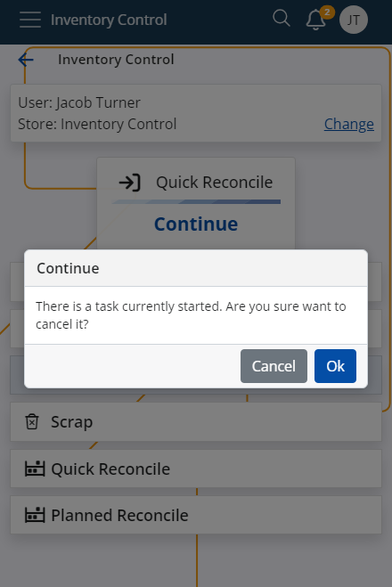

Inventory Control
Inventory Control is a mobile inventory management application designed to speed up and simplify basic operations with store orders. It's perfectly suitable for shops and smaller stores.
It follows a similar logic to the BarCodeCommand panel from within the Desktop Client and allows workers to complete their daily tasks quickly, without going through the more complex procedures of the WMS module.
You can receive, issue, reconcile, transfer and scrap orders in just a few steps. These actions are not synchronized in real-time with the ERP.net system - you need to create the respective receipt transaction, issue transaction, transfer order, and reconciliation documents in order to reflect them.
Prerequisites
Before you start using Inventory Control, you'll be prompted to select the store for which you want to perform different operations.
That store will be saved for follow-up operations but can easily be switched to a different one with the help of the Change button.

Common features
Here, you can observe the most commonly used features in the Inventory Control panel.
Scanning
In order to scan your products manually, you need to use the Scan field.
It lets you quickly insert the instances of a product you want to add either manually or through barcode commands.
For a list of available barcode templates, check out the Command list.
Individual scan
Simply type in a product's code once (e.g. "0000001") in order to add only one pcs of it. Tap the blue arrow to confirm.

Every time you scan, you'll be taken to the Info tab for the respective product.
Successfully scaned pcs are painted in green.
If more lots are present for a product, the FEFO principle determines which lot has pcs add first.
Incorrect product codes will generate an error.

Multiple scans
To scan more pcs or the exact number of pcs for a product, specify it first (e.g. "50"), add a "*", and then enter the product code.
This can be done on one line (e.g. 50*1001150), or on two separate lines for each input. Tap the blue arrow to confirm.

Note
- The trash bin button allows you to remove the latest operation, which will restore the previous operation value.
- Any one, two or three-number combination is automatically counted as a multiplier. You can insert it without adding "*" in the end.
- You can remove inserted multipliers by tapping the Clear button (X).
Zero count
If you enter a zero quantity in the Scan field, all of the entered quantities before will be set to zero.

Select a product from the Info tab
You also have the option to scan a product's code only by tapping on its the code within the Info tab.
When you do that, the product code will be automatically entered in the Scan field.

If you need to scan multiple instances of your product, you can provide a quantity into the Scan field.
Once you tap on the product's code, you can scan all of its instances at once.

Continue last started operation
Inventory Control allows you to resume the last operation you were performing.
If you exited a receive operation mid-way, for example, it will be displayed as a shortcut in the main menu.
You can tap the Continue button to proceed with it.

If you choose to begin a new operation before completing the latest one, a warning will appear, asking you to confirm the termination of the latest operation.

Learn more about Inventory Control in the following articles: